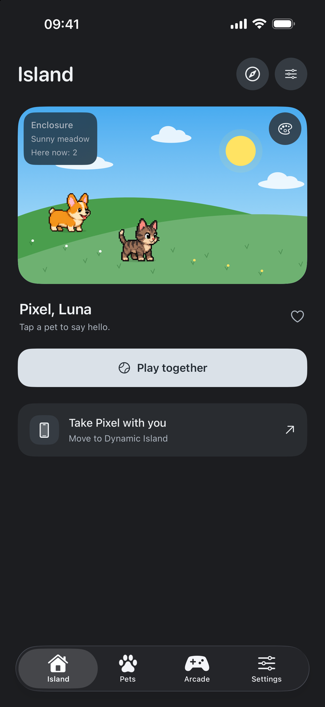
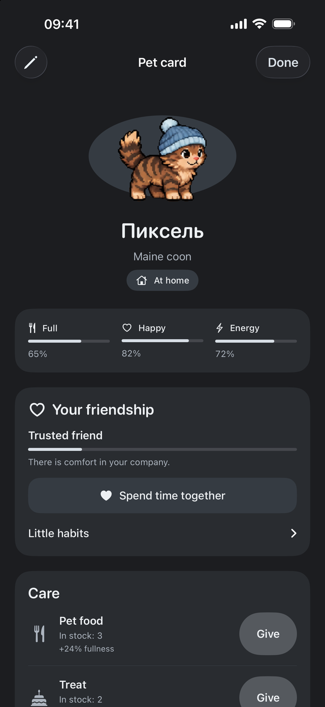
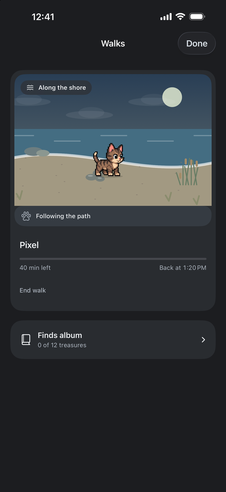
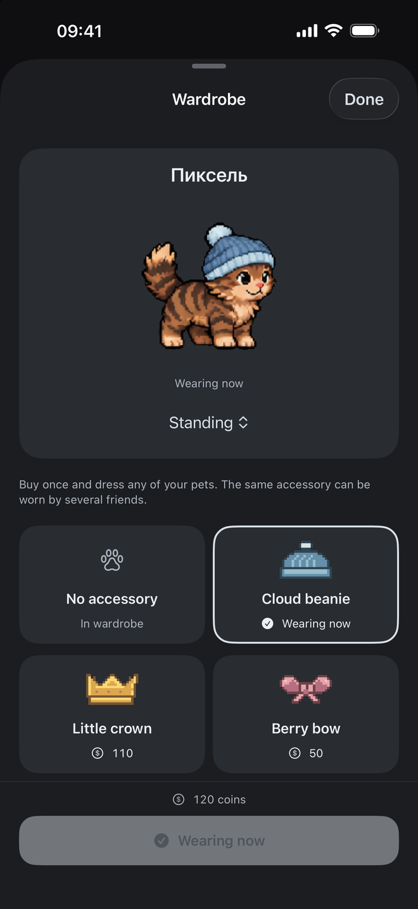

A home with personality
Choose your companions and their surroundings. A box, a soft bed or a swing becomes part of their little world.
Pixel companions for iPhone
Make room for your favorite companions. Create a cozy home, send them on walks and collect little memories together.
Preparing for release · iPhone · iOS 17 or later

At your own pace
Feed a friend, try on a beanie or watch the neighbors meet. No daily streak to keep and no missed-day penalty for friendship.
Choose your companions and their surroundings. A box, a soft bed or a swing becomes part of their little world.
Send friends to explore different places. Keep discoveries in an album and share postcards from their travels.
Four arcade games for a short break. Earn coins to spend on care, furniture and accessories.
One island, many little moments
Each pet has a name, familiar activities and shared memories. You can find them all in your companion’s personal card.



Screens from the current app in an iPhone simulator. Dynamic Island requires a supported iPhone; iOS controls Live Activity presentation and updates.
Get in touch
If something went wrong or you have an idea for the island, write to the author.
bortone52@yandex.ruInclude your iPhone model, iOS and app versions, and what happened. A screenshot can help if it contains no personal information. Please do not send passwords or card details.
On the Island tab, use the button to take your pet with you. Your pet appears in a Lock Screen Live Activity and, on a supported iPhone, Dynamic Island. Use the same action to bring your pet home. A companion on a discovery walk needs to return first.
Check that your iPhone supports Dynamic Island and that Live Activities are enabled for Pet Island in iOS Settings. The system decides when to display and update the activity. Pets rest on Always-On Display; continuous background animation is not guaranteed.
Open walks with the compass button on the Island tab. For care and the wardrobe, open Pets and tap a companion’s card. Furniture, accessories and supplies are available in Arcade → Shop, where purchases use earned game coins.
Open Settings → App language in Pet Island, then continue to iOS Settings. Choose the language for Pet Island. If Language is missing, add a second language in General → Language & Region, keeping your current primary language, then return to the app’s settings. Your island and your iPhone’s primary language stay the same.
Open Settings → Island backup, export a file and save it in your chosen location. To move your island, transfer the file to another device and import it in Pet Island. Bring your Live Activity companion home before restoring. Import replaces the current island after confirmation; the previous version is saved under “Island before last restore.” There is no automatic cross-device sync.
No. Tips are optional, one-time payments through Apple, with no subscription, coins or additional features. Prices and availability depend on the App Store. You can use the app without tipping. For payment questions, check your Apple purchase history. Refund requests are reviewed by Apple under its own process.